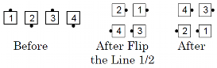
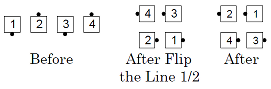

Part 1: Do the "any Tagging Call" to the 1/2 Tag
position.
Part 2: Scoot Back.
Flip Back. From a wave: Flip The Line ½, then Scoot Back. Ends in a box circulate formation. This call has two parts.


Tag Back to a Wave. From a line or wave: ½ Tag and Scoot Back. Ends in box circulate formation. This call has two parts.
Vertical Tag Back to a Wave. From box circulate, facing couples, etc.: Vertical ½ Tag, then Scoot Back. Ends in box circulate formation. This call has two parts.